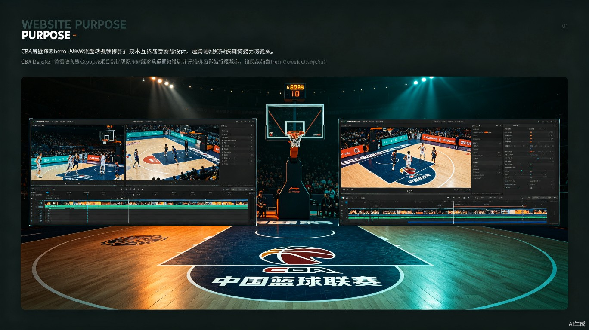
从入门到精通的完整教学指南
涵盖蒙版、关键帧、画中画、特效、调色、变速等核心剪辑技术，全部使用CBA实战案例，助你打造专业级篮球赛事短视频
工欲善其事，必先利其器。在开始剪辑CBA比赛视频前，合理的素材管理和项目规划能让后续工作事半功倍。
打开剪映专业版，创建新项目时的推荐设置：
观看完整比赛录像，标记以下类型的时间点：
蒙版是视频剪辑中最强大的创意工具之一，通过遮罩可以控制素材的显示区域，实现画中画、分屏、转场等高级效果。
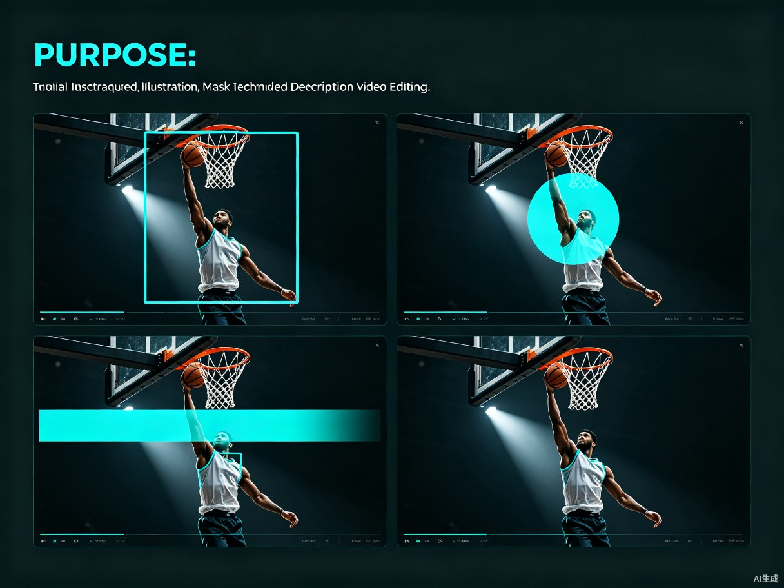
四种核心蒙版类型在CBA剪辑中的应用示意
在剪映专业版中，蒙版功能位于属性面板 → 蒙版选项卡。选中时间轴上的素材后，点击"蒙版"即可添加。
最常用的蒙版类型，适合制作分屏对比、画中画边框、电影宽银幕效果。
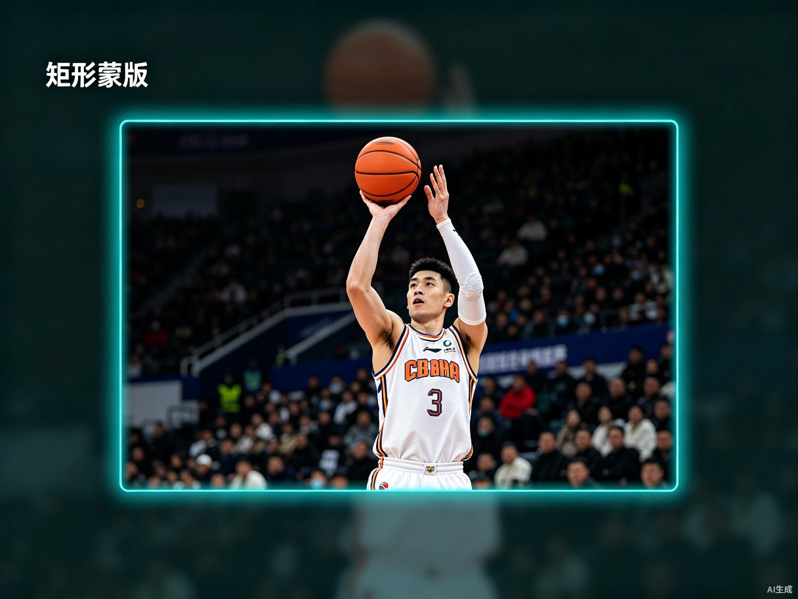
操作路径：选中素材 → 属性面板 → 蒙版 → 矩形蒙版
可调参数：
CBA实战应用：
适合制作聚光灯效果、头像展示、雷达图式转场，营造聚焦感。
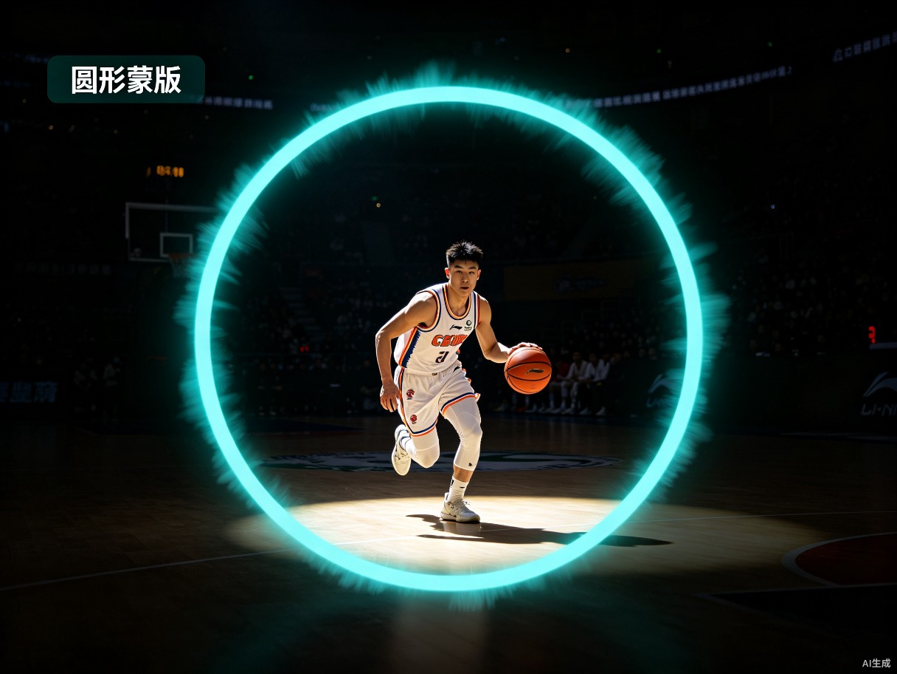
操作路径：选中素材 → 属性面板 → 蒙版 → 圆形蒙版
可调参数：
CBA实战应用：
通过线性渐变控制透明度，适合制作擦除转场、渐变遮罩、天空替换等效果。
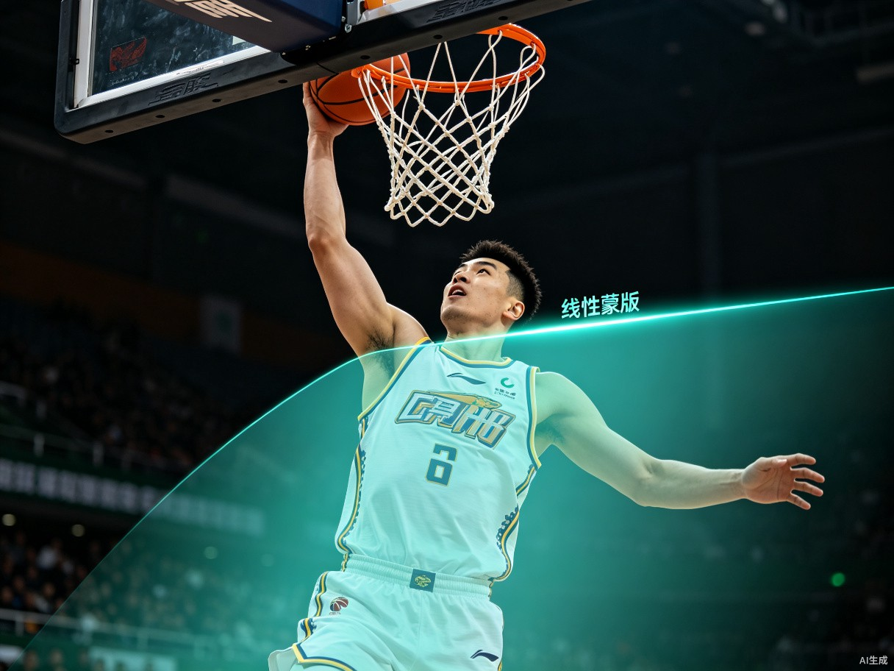
操作路径：选中素材 → 属性面板 → 蒙版 → 线性蒙版
可调参数：
CBA实战应用：
创建对称反射效果，适合制作万花筒、对称构图、创意视觉特效。
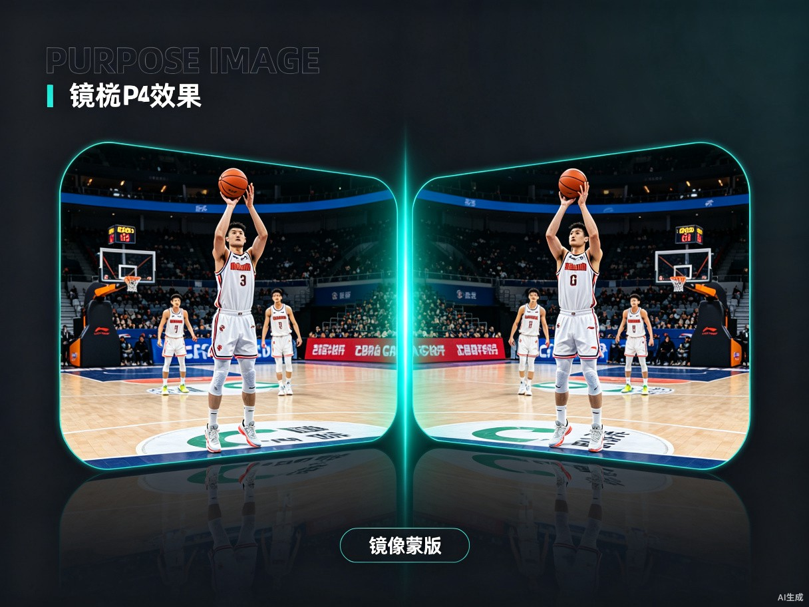
操作路径：选中素材 → 属性面板 → 蒙版 → 镜像蒙版
可调参数：
CBA实战应用：
剪映支持在同一素材上叠加多个蒙版，配合关键帧可以实现复杂的动态遮罩效果。
关键帧是动画的灵魂。通过在时间轴上设置不同时间点的属性值，剪映会自动计算中间过渡，实现平滑的动画效果。
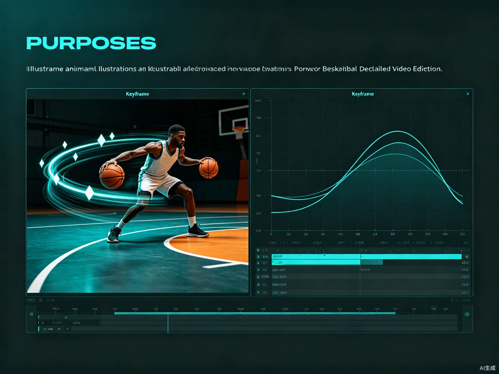
关键帧在篮球剪辑中的应用——运动路径与曲线编辑器
关键帧记录了素材在某一时刻的状态。当两个关键帧之间的属性值不同时，剪映会自动插值计算过渡。
可添加关键帧的属性包括：
剪映提供三种插值方式，决定关键帧之间的过渡曲线：
| 插值类型 | 特点 | CBA应用 |
|---|---|---|
| 线性 | 匀速变化，机械感强 | 比分牌数字滚动、计时器走动 |
| 缓入 | 开始慢，逐渐加速 | 球员出场介绍、Logo飞入 |
| 缓出 | 开始快，逐渐减速 | 画面定格、慢动作收尾 |
| 缓入缓出 | 两头慢中间快，最自然 | 摄像机推拉、球员追踪 |
在精彩进球瞬间，用缩放关键帧模拟摄像机快速推近效果。
展示球员数据时，让数据条从0%增长到实际数值。
让球员特写画面从屏幕外飞入。
制作"第三节""加时赛"等转场标题。
用关键帧让矩形蒙版跟随移动中的球员。
画中画技术允许在同一画面中展示多个视频源，是篮球赛事剪辑中展示多角度、对比数据、同时呈现多个信息的利器。
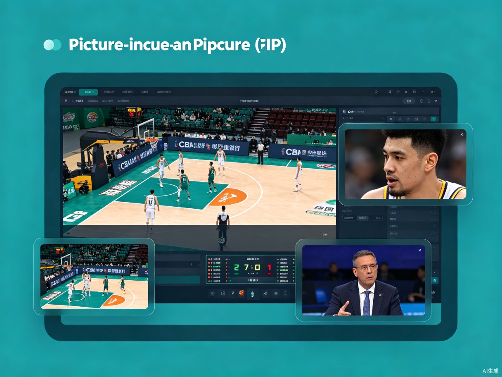
画中画在CBA赛事剪辑中的多层叠加应用
主画面展示全场进攻，右下角画中画显示得分球员特写。
左右分屏，对比两名球员的表现。
主画面为比赛，右侧画中画显示实时数据统计。
同时展示三个精彩瞬间。
用画中画作为转场元素。
用蒙版裁切画中画形状。
转场是连接不同镜头的桥梁，好的转场让视频流畅自然；特效则为画面增添视觉冲击力，让CBA集锦更具观赏性。
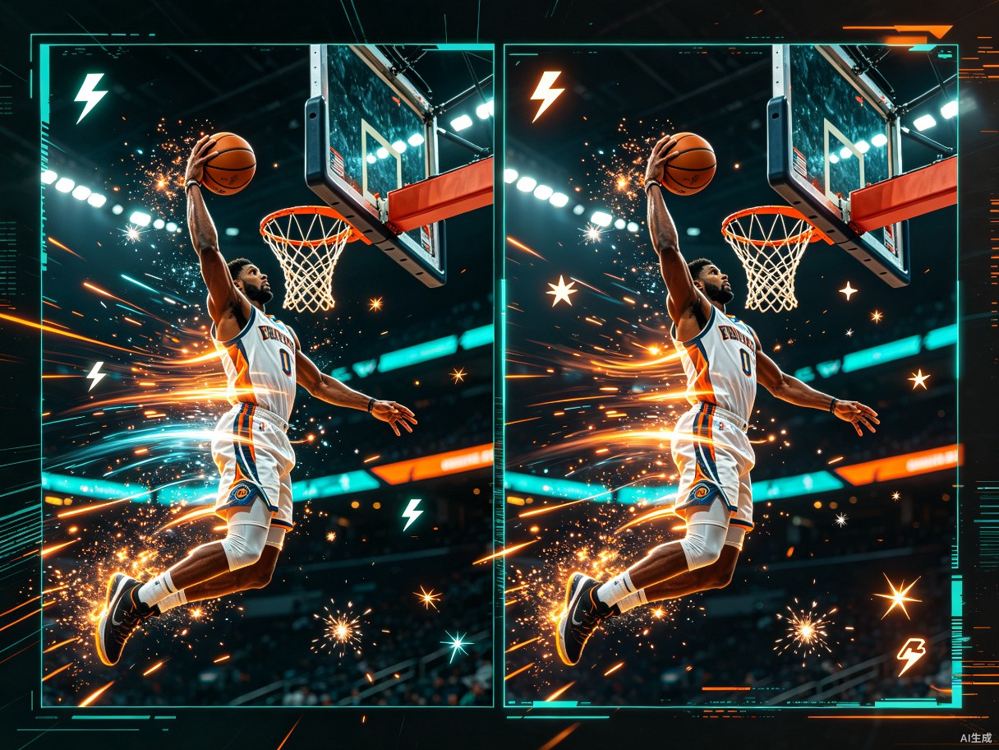
转场与特效在CBA扣篮瞬间的应用效果
| 转场类型 | 适用场景 | 持续时间 |
|---|---|---|
| 硬切 | 快节奏进球集锦、防守反击 | 0帧（瞬间切换） |
| 交叉溶解 | 情感渲染、慢动作过渡 | 15-30帧 |
| 闪白 | 精彩瞬间强调、得分庆祝 | 5-10帧 |
| 缩放推进 | 从全场推近到球员特写 | 20-30帧 |
| 运动模糊 | 快速运球、快攻推进 | 10-20帧 |
| 遮罩转场 | 球员介绍、数据展示 | 30-45帧 |
| 故障风 | 街头风格集锦、预告片 | 10-15帧 |
CBA慢镜回放是赛事剪辑的精髓。
在扣篮或身体对抗时添加。
强调快速移动。
在精彩瞬间暂停，添加文字或特效。
适合街头风格或预告片。
CBA剪辑中常用的文字动画：
调色是视频后期的灵魂。通过色彩调整，可以让CBA比赛画面更具电影感，突出赛事氛围，统一整体视觉风格。
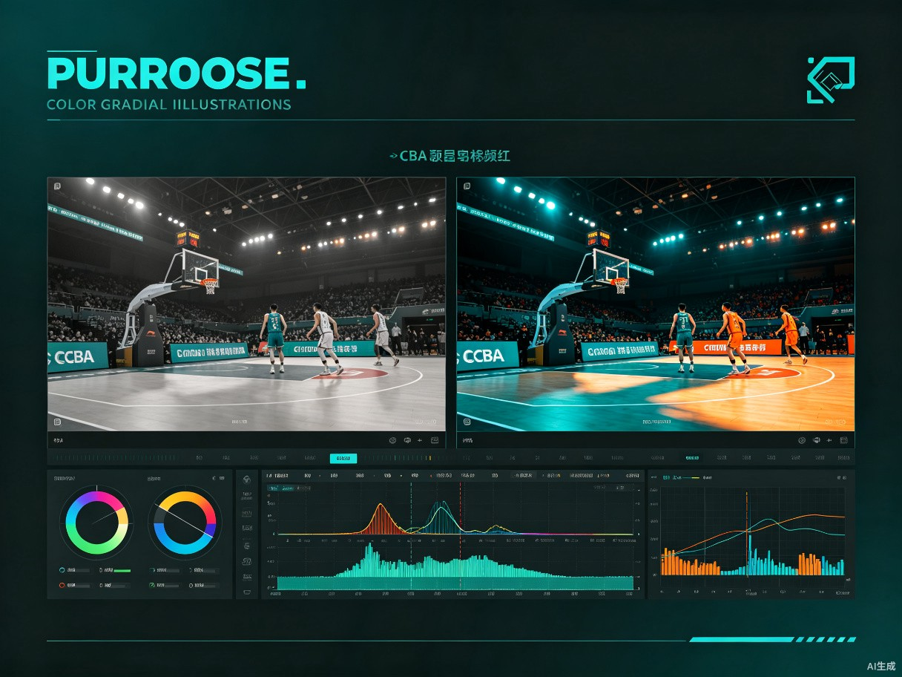
调色前后对比——CBA赛场的电影感色彩处理
选中素材 → 属性面板 → "调节"选项卡，包含以下工具：
好莱坞电影最常用的调色风格，适合CBA赛事大片感。
适合强调情绪或制作复古风格。
适合街头篮球风格或预告片。
适合纪录片风格或真实感强的内容。
音频是篮球视频的灵魂。恰到好处的BGM、精准的节拍卡点、现场原声的层次处理，能让CBA集锦的感染力提升数倍。
CBA集锦推荐音乐风格：
专业CBA视频通常包含3层音频：
CBA剪辑中常用的音效类型：
| 音效类型 | 使用场景 | 推荐来源 |
|---|---|---|
| Whoosh/Swoosh | 转场、快速运球、镜头切换 | 剪映音效库/爱给网 |
| Impact/Hit | 扣篮、身体对抗、进球 | 剪映音效库 |
| Riser | 紧张感 buildup，罚球前 | 免费音效网站 |
| Crowd Cheer | 进球后观众欢呼 | CBA现场录音 |
| Whistle | 犯规、暂停 | CBA现场录音 |
| Buzzer | 节末/终场哨 | CBA现场录音 |
变速剪辑（Speed Ramping）是在同一段素材中动态改变播放速度的技术，从正常速度突然变为慢动作再恢复，创造极强的视觉节奏感。
从后场抢断到上篮，速度变化制造张力。
用变速渲染罚球前的紧张氛围。
精彩进球后倒放展示动作细节。
让速度变化与BGM节拍同步。
模拟漫画定格效果。
掌握以下高级技法，让你的CBA剪辑从"好看"提升到"专业"。
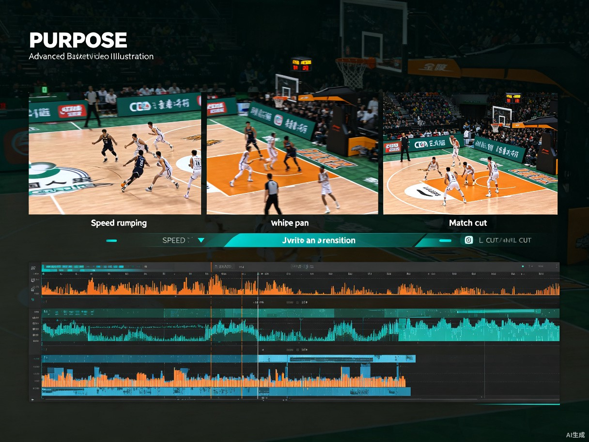
高级剪辑技法综合应用——速度变化、匹配剪辑、音画分离
利用画面元素的相似性进行无缝转场。
音频与画面的错位剪辑，让过渡更自然。
下一段音频先出现，画面稍后切换。
CBA应用：解说提到"接下来看郭艾伦的突破"时，先听到解说，1秒后才切到郭艾伦画面。
画面已切换，上一段音频延续。
CBA应用：进球画面切到观众欢呼，但进球的解说词还在延续。
模拟摄像机快速甩动，用于快速场景切换。
剪映的AI功能大幅提升了剪辑效率，从智能抠像到自动字幕，善用这些工具可以节省大量时间。
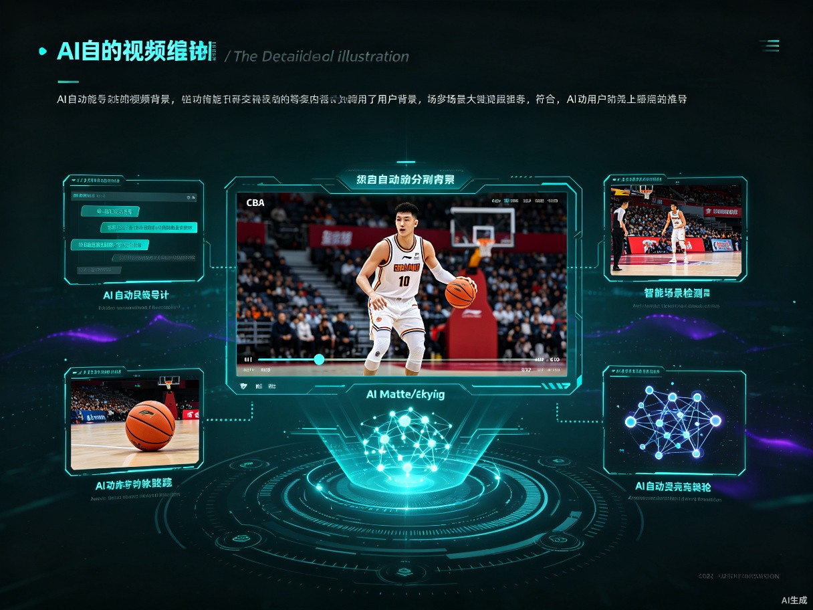
剪映AI功能在CBA视频剪辑中的应用场景
一键去除背景，提取球员主体。
自动识别解说语音并生成字幕。
剪映可根据视频内容推荐匹配的音乐。
综合运用以上所有技法，完成一个完整的CBA球员个人集锦视频。
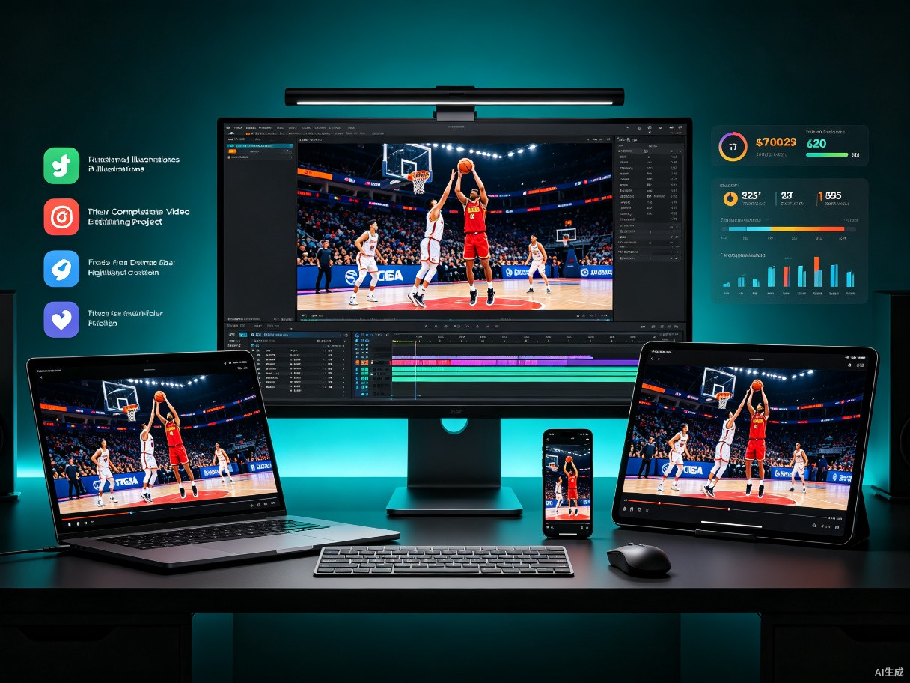
完整项目输出——从剪辑到多平台发布
目标：制作一段60秒的CBA球员（如郭艾伦）个人高光集锦
风格：快节奏、高能量、Teal & Orange电影色调
平台：抖音/快手竖屏（9:16）+ B站横屏（16:9）
| 时间 | 画面 | 技术 | 音频 |
|---|---|---|---|
| 0-3s | 球员定妆照 + 姓名条滑入 | 关键帧动画 + 文字动画 | Riser buildup |
| 3-8s | 快速剪辑3个精彩瞬间 | 硬切 + 闪白 | Drop重拍 |
| 8-15s | 招牌动作慢镜（crossover） | 25%慢动作 + 光流补帧 | Whoosh + Impact |
| 15-25s | 数据面板 + 多角度进球 | 画中画 + 数据条动画 | BGM主歌 |
| 25-40s | 高潮集锦（扣篮+助攻） | 变速剪辑 + 震动特效 | BGM副歌高潮 |
| 40-50s | 队友互动 + 庆祝 | 交叉剪辑 + 情感调色 | BGM情绪段落 |
| 50-55s | Logo动画 + 球队标志 | 蒙版转场 + 关键帧 | Riser收尾 |
| 55-60s | 关注引导 + 片尾 | 文字动画 | 淡出 |
| 问题 | 原因 | 解决 |
|---|---|---|
| 导出视频卡顿 | 码率过高或分辨率不匹配 | 降低码率，检查分辨率设置 |
| 慢动作不流畅 | 未开启光流补帧 | 速度设置中勾选"光流补帧" |
| 画中画位置偏移 | 锚点设置不正确 | 调整锚点到画面中心 |
| 调色后肤色异常 | HSL过度调整 | 用HSL单独保护肤色范围 |
| 音频不同步 | 变速后未分离音频 | 变速前分离音频轨道 |
| 蒙版边缘锯齿 | 羽化值过低 | 增加羽化值到10-20px |